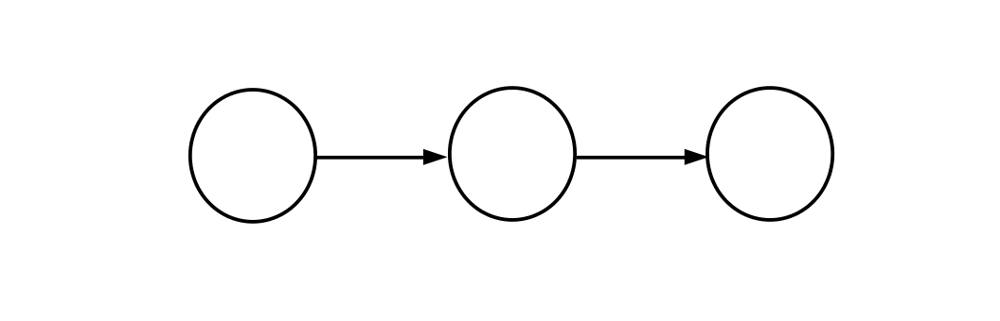
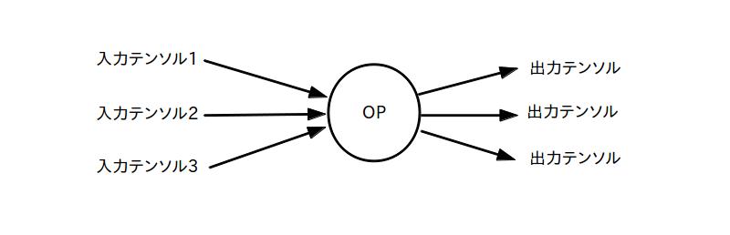

ここでは今回のアクティビティで使用する基本的なオペレーションについて学びます。
定数オペレーションは与えられた初期値を元にして定数テンソルを出力するオペレーションです。
定数テンソルなので、演算途中に値を変更することは出来ません。
定数オペレーション:
書式: tf.constant( 初期値, dtype=型 )
引数:
初期値・・・形式はスカラー、ベクトル、行列、文字列など。np.array などの非テンソルでも指定可
型・・・整数や浮動小数点数などの型を指定する
出力 : x を元に作成した定数テンソル
具体的なコード例とデータフローグラフは次の通りです。
コード1: 定数オペレーションのコード例とデータフローグラフ
import tensorflow as tf
#スカラー
# dtype=tf.float32 は要素を 32 bit浮動小数点数として扱うという意味
A = tf.constant( 1, dtype=tf.float32 )
tf.print( A )
# 表示結果
# 1
# 3 次元ベクトル
# dtype=tf.float32 は各要素を 32 bit浮動小数点数として扱うという意味
A = tf.constant( [1, 2, 3], dtype=tf.float32 )
tf.print( A )
# 表示結果
# [1 2 3]
# 3 x 2 行列
# dtype=tf.float32 は各要素を 32 bit浮動小数点数として扱うという意味
A = tf.constant([[1, 2], [3, 4], [5, 6]], dtype=tf.float32 )
tf.print( A )
# 表示結果
# [[1 2]
# [3 4]
# [5 6]]
# 3 x 1 行列
# dtype=tf.float32 は各要素を 32 bit浮動小数点数として扱うという意味
A = tf.constant( [[1], [2], [3]], dtype=tf.float32 )
tf.print( A )
# 表示結果 ※ 3 次元ベクトルとの違いに注意！
#[[1]
# [2]
# [3]]
データフロー・グラフ

変数オペレーションは定数オペレーションと同様に、与えられた初期値を元にして変数テンソルを出力するオペレーションです。
ただし定数テンソルと異なり、変数テンソルは値を演算途中で変更する事ができます。
変数オペレーション:
書式: tf.Variable( 初期値, dtype=型 )
引数:
初期値・・・ 形式はスカラー、ベクトル、行列、文字列など。np.array などの非テンソルでも指定可
型・・・整数や浮動小数点数などの型を指定する
出力:
x を元に作成した変数テンソル
値を変更する時は assign メソッドを使います。
具体的なコード例とデータフローグラフは次の通りです。
コード2: 変数オペレーションのコード例とデータフローグラフ
import tensorflow as tf
# スカラー
# dtype=tf.float32 は要素を 32 bit浮動小数点数として扱うという意味
A = tf.Variable( 1, dtype=tf.float32 )
tf.print( A )
#表示結果
# 1
# 3 x 2 行列
# dtype=tf.float32 は各要素を 32 bit浮動小数点数として扱うという意味
A = tf.Variable([[1, 2], [3, 4], [5, 6]], dtype=tf.float32 )
tf.print( A )
# 表示結果
# [[1 2]
# [3 4]
# [5 6]]
# assign メソッドで値を変更
A.assign( [[-1,-2],[-3,-4],[-5,-6]] )
tf.print( A )
# 表示結果
# [[-1 -2]
# [-3 -4]
# [-5 -6]]
# 3 x 2 行列を作って要素全てを 0 で初期化
# dtype=tf.float32 は各要素を 32 bit浮動小数点数として扱うという意味
A = tf.Variable( tf.zeros([3,2]), dtype=tf.float32 )
tf.print( A )
# 表示結果
# [[ 0 0]
# [ 0 0]
# [ 0 0]]
# 3 x 2 行列を作って、要素全てを平均 0、標準偏差 0.1 の正規乱数で初期化
A = tf.Variable( tf.random.normal( [3, 2], mean=0.0, stddev=0.1, dtype=tf.float32 ) )
tf.print( A )
# 表示結果 ※ 乱数なので毎回変わる
# [[-0.0252009071 -0.0138573265]
# [-0.0525492802 -0.00620838907]
# [0.00722313905 -0.0197176021]]
# 3 x 2 行列を作って、要素全てを -1 〜 3 までの範囲の一様乱数で初期化
A = tf.Variable( tf.random.uniform( [3, 2], minval=-1, maxval=3, dtype=tf.float32 ) )
tf.print( A )
# 表示結果 ※ 乱数なので毎回変わる
# [[-0.6053071 2.604982 ]
# [ 2.2764373 1.8386497]
# [ 2.4975042 -0.6781211]]
データフロー・グラフ

足し算オペレーションは 2 つのテンソルの足し算を行うオペレーションです。
足し算オペレーション:
書式: tf.math.add( x, y ) または x+y
引数:
x、y ・・・定数テンソルでも変数テンソルでもどちらでも可
出力:
計算結果が入ったテンソル
※1 ベクトルや行列の足し算の場合は要素毎に足し合わされます
※2 テンソル x、y のタイプや形状が違うとエラーになります。(例) xがスカラーでyが行列、xとyの行数や列数が異なる、etc.
具体的なコード例とデータフローグラフは次の通りです。
コード3: 足し算オペレーションのコード例とデータフローグラフ
import tensorflow as tf
# スカラー同士
A = tf.constant( 1, dtype=tf.float32 )
B = tf.constant( 2, dtype=tf.float32 )
C = tf.math.add( A, B )
tf.print( C )
# 表示結果
# 3
# + 記号を使っても良い
C = A+B
tf.print( C )
# 表示結果
# 3
# 行列同士
A = tf.constant( [[1,2],[3,4]], dtype=tf.float32 )
B = tf.constant( [[5,6],[7,8]], dtype=tf.float32 )
C = tf.math.add( A, B )
tf.print( C )
# 表示結果 ※ ベクトルや行列の足し算の場合は要素毎に足し合わされる
#[[ 6 8]
# [10 12]]
データフロー・グラフ

掛け算オペレーションは 2 つのテンソルの掛け算を行うオペレーションです。
なお行列積ではありませんのでテンソルが行列の場合は要素毎に値が掛け合わされます。
行列積は次に説明するmatmulを使います。
掛け算オペレーション:
書式: tf.math.multiply( x, y ) または x*y
引数:
x、y ・・・定数テンソルでも変数テンソルでもどちらでも可
出力:
計算結果が入ったテンソル
※1 ベクトルや行列の掛け算の場合は要素毎に掛け合わされます
※2 テンソル x、y のタイプや形状が違うとエラーになります。(例) xがスカラーでyが行列、xとyの行数や列数が異なる、etc.
具体的なコード例とデータフローグラフは次の通りです。
コード4: 掛け算オペレーションのコード例とデータフローグラフ
import tensorflow as tf
# スカラー同士
A = tf.constant( 2, dtype=tf.float32 )
B = tf.constant( 3, dtype=tf.float32 )
C = tf.math.multiply( A, B )
tf.print( C )
# 表示結果
# 6
# * 記号を使っても良い
C = A*B
tf.print( C )
# 表示結果
# 6
# 行列同士
A = tf.constant( [[1,2],[3,4]], dtype=tf.float32 )
B = tf.constant( [[5,6],[7,8]], dtype=tf.float32 )
C = tf.math.multiply( A, B )
tf.print( C )
# 表示結果 ※ ベクトルや行列の足し算の場合は要素毎に掛け合わされる
#[[ 5 12]
# [21 32]]
データフロー・グラフ
行列積オペレーションは 2 つの行列の行列積を行うオペレーションです。
行列積オペレーション:
書式: tf.linalg.matmul( x, y ) または x@y
引数:
x、y ・・・行列型テンソル。定数テンソルでも変数テンソルでもどちらでも可
※ x の列数と y の行数が異なると行列積が出来ないのでエラーになります
出力:
計算結果が入ったテンソル
※ 行列積 x・y と 行列積 y・x の値は一般的に異なりますので注意
具体的なコード例とデータフローグラフは次の通りです。
6. f(x) で表される演算系オペレーション
log(x)、exp(x)、sin(x)、cos(x)、sigmoid(x)、tanh(x) などの f(x) で表される演算系オペレーションはそのまま名前通りの演算を行います。
以下では log(x)、sigmoid(x)、tanh(x)の出力結果を例として挙げます。
softmaxオペレーションも上で挙げたf(x)で表される演算系オペレーションのひとつです。
ただしニューラルネットワークのone-hotベクトル型の出力層で良く使われている演算なので、項目を分けて説明します。
: softmaxオペレーション
書式: tf.nn.softmax( x )
引数:
x ・・・定数テンソルでも変数テンソルでもどちらでも可
出力:
出力は以下のステップで計算する
- x の各要素毎に exp() を計算して、テンソル A に代入する
- A の要素を全て足して変数 a に入れる
- A の各要素を a で割った値を出力とする
- 出力された各値は確率を表す
具体的なコード例とデータフローグラフは次の通りです。
総和オペレーションはテンソルの要素を全て足し合わせて出力するオペレーションです。
このオペレーションも上で挙げたf(x)で表される演算系オペレーションのひとつなのですが、ニューラルネットワークで良く使われている演算なので項目を分けて説明します。
総和オペレーション:
書式: tf.math.reduce_sum( x )
引数:
x ・・・定数テンソルでも変数テンソルでもどちらでも可
出力:
xの各要素をすべて足し合わせた値
具体的なコード例とデータフローグラフは次の通りです。